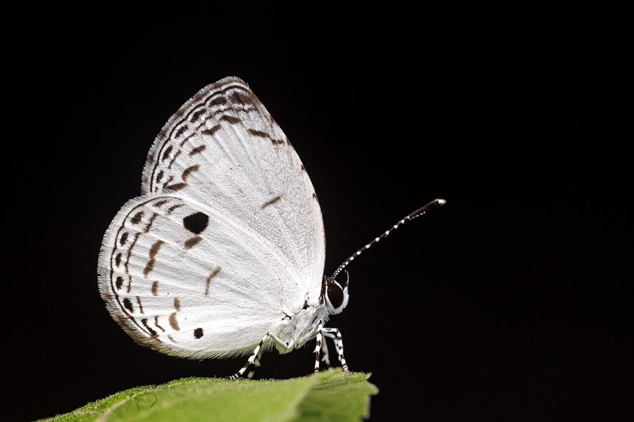

क्वेकर तितलीQuaker
Neopithecops zalmora · Lycaenidae · INS-0186

- Scientific name वैज्ञानिक नाम
- Neopithecops zalmora Butler, 1870
- Family कुल
- Lycaenidae
- Hindi हिंदी
- क्वेकर तितली
- Local names स्थानीय नाम
- quaker titli, quaker butterfly, kweker titli, chhota quaker
- Status here यहाँ की स्थिति
- native
- Movement आवागमन
- Resident, here all year
- Known from कहाँ दर्ज
- Others have published records from the wider Awadh–Purvanchal plain, none yet from Basti–Ayodhya अवध–पूर्वांचल से दूसरों के प्रकाशित अभिलेख, बस्ती–अयोध्या से अभी नहीं
- IUCN IUCN
- not evaluated
- Review समीक्षा
- not yet reviewed
When to look कब देखें
Present all year. साल भर मौजूद।
Uses and possibilities उपयोग और संभावनाएँ
Drawn from the documented uses in the profile below, where each is labelled traditional, current or a research lead. All uses →
Tell it apart from इनसे अलग पहचानें
क्वेकर तितली / Quaker
Neopithecops zalmora Butler, 1870 — Lycaenidae
क्वेकर तितली — घने पेड़ों की छाँव और नम झाड़ियों में पाई जाने वाली एक बहुत छोटी और शांत तितली है। इसके पंखों का निचला हिस्सा मटमैला सफेद होता है जिस पर कोई चटक रंग नहीं होता। यह सीधी धूप से बचती है और जमीन के पास धीरे-धीरे उड़ती है। इसके कैटरपिलर बन-नींबू (ग्लाइकोस्मिस) और कामिनी के पौधों पर पलते हैं। बगीचों और बाँस के झुरमुटों में यह अक्सर नजर आती है।
Quick Identification त्वरित पहचान
| Feature | Description |
|---|---|
| Size | Very small butterfly; wingspan 20–28 mm (Kehimkar 2008) |
| Upper Forewing | Dark brownish-black with a diffuse white central patch (Evans 1932) |
| Upper Hindwing | Uniform fuscous brown or with a faint whitish discal flush (Bingham 1907) |
| Underside | Opaque dull white to creamy grey with faint brown lines (Kehimkar 2008) |
| Underside Spotting | Minute dark costal dot near apex and tiny tornal specks (Wynter-Blyth 1957) |
| Antennae & Eyes | Antennae ringed with white; eyes hairy (Bingham 1907) |
| Flight Style | Weak, fluttering, dancing flight strictly within deep shade (Kunte 2000) |
Field tip: Look along shaded village hedges, damp ditches, and beneath dense mango or bamboo canopies where sunlight barely penetrates. A tiny whitish butterfly fluttering feebly just above leaf litter without venturing into open sun is typical of this species.
हिंदी: घने बगीचों और बाँस के झुरमुटों में जमीन के पास उड़ने वाली इस नन्ही सफेद-भूरी तितली को इसके शांत स्वभाव और छाँव पसंद करने की आदत से पहचाना जा सकता है।
Morphology आकारिकी
Biometrics recorded from adult specimens (Kehimkar 2008; Evans 1932):
| Measurement | Range | Source |
|---|---|---|
| Wingspan | 20–28 mm | Kehimkar (2008) |
Adult description: The Quaker is a diminutive lycaenid butterfly showing notable seasonal variation between wet-season and dry-season broods (Bingham 1907). In the wet-season form, the upperside is dark purple-brown to brownish-black with a restricted white discal patch on the forewing, while the hindwing remains uniformly dark brown (Evans 1932). In the dry-season form, the white patch on both wings expands significantly, occupying nearly half of the wing area (Wynter-Blyth 1957).
The underside is dull chalky white or pale creamy grey (Kehimkar 2008). Unlike many blues, it lacks rows of distinct dark ocelli. A faint brownish discocellular line crosses the cell, accompanied by an irregular, broken postdiscal transverse line (Bingham 1907). A tiny black speck sits on the costal margin near the apex, and small marginal specks line the tornus of the hindwing (Bingham 1907).
Larval Stage इल्ली अवस्था
The mature caterpillar is onisciform (woodlouse-shaped), flattened, pale green, and covered with minute erect setae (Bingham 1907). A darker green pulsating dorsal line runs down the back, bordered by faint yellowish lateral streaks (Kehimkar 2008). The pupa is short, stout, pale green or light brown, fastened by a silken girdle to the underside of a host leaf (Kunte 2000).
हिंदी: इसके पंखों का फैलाव 20 से 28 मिमी होता है। ऊपरी पंख भूरे-काले और बीच में सफेद धब्बे वाले होते हैं, जबकि नीचे का हिस्सा मटमैला सफेद होता है। इसकी इल्ली चपटी और हरी होती है।
Behaviour & Ecology व्यवहार और पारिस्थितिकी
The Quaker is an obligate shade-dwelling butterfly of the forest understorey and dense grove habitat (Kehimkar 2008). It rarely ascends into the higher tree canopy and avoids bright, open, sunlit fields. Flight is slow, weak, and fluttering, usually sustained for only a few metres before the butterfly settles on low foliage, seedling leaves, or exposed rootlets within dense scrub (Wynter-Blyth 1957).
Adults are active during warm daylight hours, particularly in the morning and late afternoon when humidity is elevated (Kunte 2000). They obtain moisture and dissolved mineral salts from damp earth and wet leaf litter in shady gullies (Kehimkar 2008). Unlike most lycaenids, males do not assemble in large mud-puddling aggregations in the open, but puddle singly or in small groups in sheltered clearings. When perched, the wings are held tightly closed over the back, revealing only the cryptic pale underside that blends against sun-flecked dry leaves (Wynter-Blyth 1957).
हिंदी: यह तितली धूप से बचकर नम और ठंडी छाँव में ही रहना पसंद करती है। इसकी उड़ान बहुत कमजोर और धीमी होती है, जो जमीन से कुछ फीट ऊपर ही सीमित रहती है।
Life Cycle / Phenology जीवन चक्र
Seasonal phenology in northern Indian plains across the agricultural calendar (Kunte 2000; Kehimkar 2008):
| Season / Month | Stage | Field Observation |
|---|---|---|
| July–August (Kharif monsoon) | Egg & Larva | Females oviposit on tender terminal shoots of rutaceous shrubs (Kunte 2000) |
| September–November (Post-monsoon) | Adult peak | Highest abundance of adults fluttering in shaded thickets (Kehimkar 2008) |
| December–January (Rabi winter) | Larva & Pupa | Development slows; larvae feed slowly during cool weather |
| February–March (Spring / Zaid) | Adult emergence | Dry-season forms with enlarged white wing patches emerge (Wynter-Blyth 1957) |
| April–June (Summer pre-monsoon) | Adult & Egg | Restricted to moist microhabitats near canal banks and garden wells (Kunte 2000) |
Eggs are laid singly on the underside of young leaves or flower buds of host plants (Kunte 2000). Incubation requires a few days under warm monsoon conditions. The larva feeds primarily on tender foliage and developing flower buds, completing development in a few weeks. Pupation occurs on a leaf surface or dry twig, and the pupal period lasts about a week to ten days before adult eclosion. Multiple overlapping generations occur through the year.
हिंदी: बरसात के बाद सितम्बर से नवम्बर के महीनों में यह तितली सबसे अधिक संख्या में दिखाई देती है। मादा पत्तियों पर एक-एक अंडा देती है और कुछ हफ्तों में नया वयस्क बन जाता है।
Host Plants or Prey आहार
Documented larval host plants from published Indian lepidopteran accounts (Kunte 2000; Kehimkar 2008):
- Glycosmis pentaphylla (Orange Berry / Ashsheora, family Rutaceae) — primary larval food plant in northern India (Kunte 2000).
- Glycosmis mauritiana (family Rutaceae) — documented host across peninsular and Gangetic plains.
- Murraya paniculata (Orange Jasmine, family Rutaceae) — commonly cultivated and wild shrub utilized in gardens and groves (Kehimkar 2008).
Adult butterflies feed on floral nectar from low-growing herbaceous plants in shaded borders, including Justicia and Ageratum species (Kehimkar 2008). They also imbibe honeydew secreted by aphids and sap from damp soil (Kunte 2000).
हिंदी: इसके कैटरपिलर मुख्य रूप से बन-नींबू और कामिनी के पौधों की कोमल पत्तियां खाते हैं। वयस्क तितलियाँ छोटे जंगली फूलों का रस और नम मिट्टी से खनिज लेती हैं।
Predators / Natural Enemies शत्रु
Common insectivorous predators of the Gangetic plain likely to take early stages and adults:
- Spiders: Jumping spiders (Salticidae) and small lynx spiders (Oxyopes species) ambush resting adults on low shrubbery.
- Insects: Praying mantises and assassin bugs prey on caterpillars and adults in thick vegetation.
- Parasitoids: Small braconid and chalcid wasps parasitise the larvae and pupae.
- Birds: Insectivorous birds of shaded undergrowth, such as prinias, fantails, and babblers, occasionally catch fluttering adults.
हिंदी: मकड़ियाँ, शिकारी कीड़े और झाड़ियों में घूमने वाली छोटी चिड़ियाँ इस तितली और इसकी इल्लियों का शिकार करती हैं।
Agricultural / Human Relevance कृषि प्रासंगिकता
Ecosystem role: The Quaker is completely harmless to agricultural crops and commercial forestry (Kunte 2000). Its larval feeding is restricted to wild shrubs and garden ornamentals such as Murraya paniculata (Orange Jasmine), where defoliation is minimal and of no economic consequence.
Indicator value: Because it requires continuous shade, humidity, and native understorey shrubs, the presence of the Quaker serves as a sensitive ecological indicator of healthy village woodlots, groves, and intact hedgerows that have not been stripped bare by intensive weedicide use (Kehimkar 2008).
Traditional: No traditional uses or folklore are documented for this species in regional literature.
Today: Valued by naturalists as an indicator of grove microclimate and native vegetation structure.
Research direction (a lead, not a result): Investigating the chemical ecology of its larval host fidelity across wild rutaceous plants in northern India.
हिंदी: यह तितली फसलों को कोई नुकसान नहीं पहुँचाती। जहाँ पुराने बाग-बगीचे और घनी छाँव सुरक्षित होती है, वहाँ यह प्राकृतिक संतुलन बनाए रखने में मदद करती है।
Expected Locally स्थानीय रूप से अपेक्षित
Not a field record. Written from published accounts for eastern Uttar Pradesh. No confirmed local sighting yet — if you have seen it, that is what the atlas needs.
अभी तक स्थानीय पुष्टि नहीं। यह विवरण प्रकाशित स्रोतों से है, किसी अवलोकन से नहीं।
The Quaker is expected throughout eastern Uttar Pradesh in shaded village orchards, old mango groves, moist canal banks, and overgrown hedges where its rutaceous host plants grow. Look along the dark understorey of dense bamboo groves and undisturbed orchard floors from September through November, particularly after the retreat of the monsoon rains. GBIF holds published records from the wider Awadh–Purvanchal plain, none yet from Basti–Ayodhya. A photograph with date and location, submitted through the About page, would confirm the first local documentation for the district.
Distribution वितरण
Global range: South and Southeast Asia, from India and Sri Lanka eastwards across Myanmar, Thailand, Malaysia, and southern China to the Philippines (Bingham 1907).
In India: Widely distributed across peninsular India, the Western and Eastern Ghats, central India, the lower Himalayas, and across the Gangetic plain to Assam and the Northeast (Evans 1932; Kehimkar 2008).
In Uttar Pradesh: Recorded from moist forested tracts, wildlife sanctuaries, and historical grove habitats across central and eastern districts.
In Basti district / eastern UP: Expected as a resident in established village orchards, bamboo groves, and riverine thickets with mature undergrowth.
हिंदी: यह भारत और दक्षिण-पूर्व एशिया में व्यापक रूप से पाई जाती है। उत्तर प्रदेश के पुराने बागों और नमी वाले इलाकों में इसकी उपस्थिति दर्ज है।
Research Questions शोध प्रश्न
- Which wild or cultivated rutaceous shrubs support breeding populations of the Quaker in eastern Uttar Pradesh? / पूर्वी उत्तर प्रदेश में क्वेकर तितली किन पौधों पर अपने अंडे देती है?
- Does the proportion of dry-season forms with expanded white patches change significantly between winter and late spring?
- How severely does the clearing of village hedge undergrowth impact Quaker abundance in agricultural landscapes? / खेतों की मेड़ों से झाड़ियाँ साफ करने पर इस तितली की संख्या पर क्या असर पड़ता है?
- What is the minimum grove patch size and canopy closure required to sustain a local population?
- What predators are the primary source of mortality for Quaker caterpillars in rural groves?
Similar Species मिलती-जुलती प्रजातियाँ
| Species | How to tell apart | हिंदी | |
|---|---|---|---|
| Zizina otis ([[lesser_grass_blue\ | Lesser Grass Blue]]) | Underside greyish-brown with numerous dark ringed spots; flies actively in open sunny grasslands rather than deep shade | लेसर ग्रास ब्लू — धब्बेदार निचला हिस्सा |
| Zizula hylax ([[tiny_grass_blue\ | Tiny Grass Blue]]) | Much smaller; male violet-blue above; underside has a conspicuous dark spot in the forewing cell | टाइनी ग्रास ब्लू — पंख के घेरे में काला बिंदु |
| Castalius rosimon ([[common_pierrot\ | Common Pierrot]]) | Boldly marked below with heavy black bars and bands; visits sunny ber bushes | कॉमन पियरो — चटक काले-सफेद पट्टे |
Field rule: A tiny butterfly fluttering weakly strictly in deep shade, with spotless creamy white underwings marked only by faint brown lines and tiny costal specks, is the Quaker.
हिंदी: घास में उड़ने वाली अन्य छोटी नीली तितलियों के नीचे काले धब्बे होते हैं, जबकि क्वेकर तितली का निचला हिस्सा बिल्कुल सादा मटमैला सफेद होता है और यह केवल छाँव में उड़ती है।
Taxonomy & Classification वर्गीकरण
Original description. Described by Arthur Gardiner Butler in 1870 as Pithecops zalmora in Catalogue of Diurnal Lepidoptera Described by Fabricius in the Collection of the British Museum, page 161. Type locality: Moulmein, Burma (Myanmar).
Subspecies. Multiple subspecies are recognized across the Oriental region. The population inhabiting mainland northern India and the Gangetic plain is classified as the nominotypical subspecies Neopithecops zalmora zalmora (Butler, 1870).
Family and order placement. Order Lepidoptera, family Lycaenidae, subfamily Polyommatinae, tribe Polyommatini. The genus Neopithecops de Nicéville, 1890, contains small shade-loving lycaenids adapted to forest understoreys.
Phylogenetic notes. Neopithecops is closely allied to Pithecops and Megisba, distinguished by structural differences in male genitalia, venation of the forewing, and smooth hairy eyes (Bingham 1907).
IUCN status rationale. Not evaluated (NE) on the IUCN Red List of Threatened Species. The species is widespread, common across its broad geographic range, and faces no imminent extinction risks.
हिंदी: इसका वैज्ञानिक नाम Neopithecops zalmora है और यह Lycaenidae परिवार की सदस्य है। इसका कोई संरक्षण खतरा नहीं माना गया है।
Photo Gallery फोटो गैलरी
No photos yet — add field photos to media/species/quaker/ and run node scripts/sync_photos.js.
Photos needed आवश्यक फोटो
- [ ] Adult resting on foliage in deep shade (छाँव में पत्ती पर बैठी वयस्क तितली)
- [ ] Underside showing pale creamy ground colour and faint markings (पंखों के नीचे की हल्की धारियाँ)
- [ ] Eggs or larva on rutaceous host plant (आहार पौधे पर अंडे या इल्ली)
- [ ] Adult mud-puddling on damp woodland soil (गीली मिट्टी पर नमी चूसती तितली)
References संदर्भ
- Butler, A. G. (1870). Catalogue of Diurnal Lepidoptera Described by Fabricius in the Collection of the British Museum. Taylor and Francis, London, p. 161.
- Bingham, C. T. (1907). The Fauna of British India, Including Ceylon and Burma. Butterflies, Vol. 2. Taylor and Francis, London, pp. 361–362.
- Evans, W. H. (1932). The Identification of Indian Butterflies. 2nd edition. Bombay Natural History Society, Mumbai, p. 219.
- Wynter-Blyth, M. A. (1957). Butterflies of the Indian Region. Bombay Natural History Society, Mumbai, pp. 268–269.
- Kehimkar, I. (2008). The Book of Indian Butterflies. Bombay Natural History Society and Oxford University Press, Mumbai, p. 257.
- Kunte, K. (2000). Butterflies of Peninsular India. Universities Press, Hyderabad, pp. 112–114.
- Varshney, R. K. & Smetacek, P. (2015). A Synoptic Catalogue of the Butterflies of India. Butterfly Research Centre, Bhimtal and Indinov Publishing, New Delhi, p. 136.
- GBIF Occurrence Data — Neopithecops zalmora, India (2025).
Source file: species/fauna/insects/quaker.md